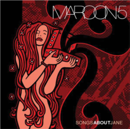

| Disco | Nombre / Fecha de publicación | Canciones |
|---|---|---|
| JORDI - 11/06/2021 | ||
 |
RED PILL BLUES - 03/11/2017 | |
| V - 29/08/2014 | ||
 |
OVEREXPOSED - 22/06/2012 | |
 |
HANDS ALL OVER - 18/08/2010 | |
 |
IT WONT BE SOON BEFORE LONG - 22/05/2007 | |
|  | SONG ABOUT JANE - 25/06/2002 |